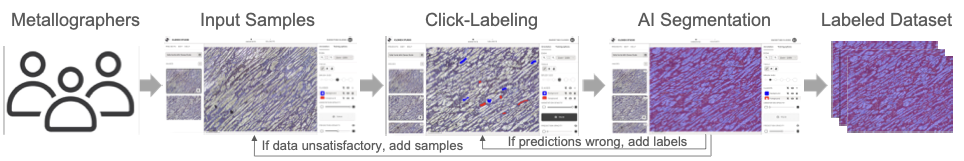

Semantic Drift Across Materials
Class definitions vary by subset (for example ferrite/pearlite versus dendrite/interdendritic regions), so one global label map is often invalid.
Benchmark Rationale and Evaluation Framing
Loading benchmark profile...
Metallography segmentation is not one task; it is a family of related tasks with shifting appearance, scale, and class semantics.
Class definitions vary by subset (for example ferrite/pearlite versus dendrite/interdendritic regions), so one global label map is often invalid.
Low and high magnification expose different structures. A model that works on one scale can fail sharply on another.
Scratches, pores, glare, and blurry interfaces are common failure drivers and can be confused with true phases if not benchmarked explicitly.
Single aggregate scores can hide minority-subset failures. Benchmark design must preserve subset-level reporting and OOD evaluation.
All values below are computed directly from the local release metadata and pair mappings.
Coverage = matched original-label pairs divided by local originals in the subset.
| Subset | Family | Condition | Magnification | Pairs | Coverage |
|---|
Complete benchmark table across 10 classical baselines, 28 supervised deep models, and 5 foundation/edge inference add-ons.
Loading benchmark results...
| Rank | Model | Group | Category | mIoU | Dice | Pixel Acc |
|---|
The workflow follows the local AMAM documentation: expert partial labels, model-assisted completion, iterative correction, and final dense labels.

One original-mask pair preview from each included subset, for quick visual inspection of task diversity.
To avoid monolithic ranking artifacts, evaluation should stay subset-aware and include out-of-distribution checks.
Evaluate each subset in its native label space. Report per-subset IoU/Dice and macro-average across subsets.
Hold out one material group at a time and report generalization drop relative to in-domain training.
Use magnification-separated splits to quantify robustness to feature-scale shift.
Build fixed slices for scratches, blurry boundaries, and reflective regions, then report targeted robustness metrics.